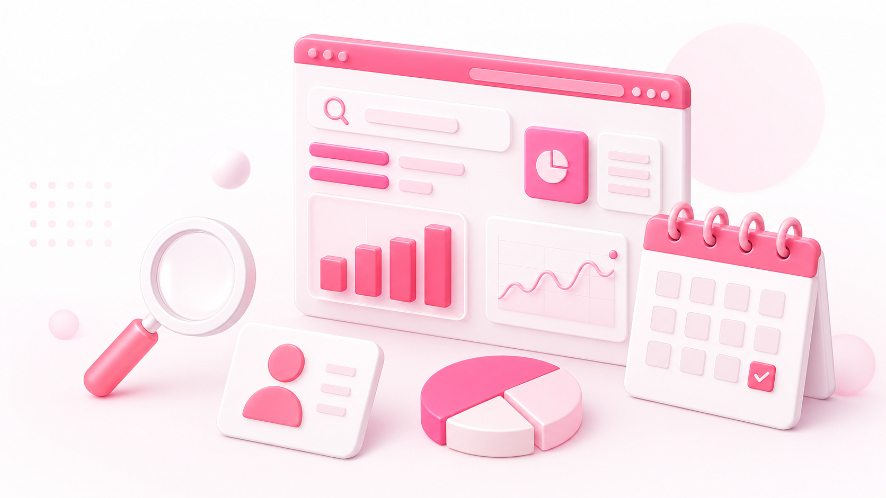
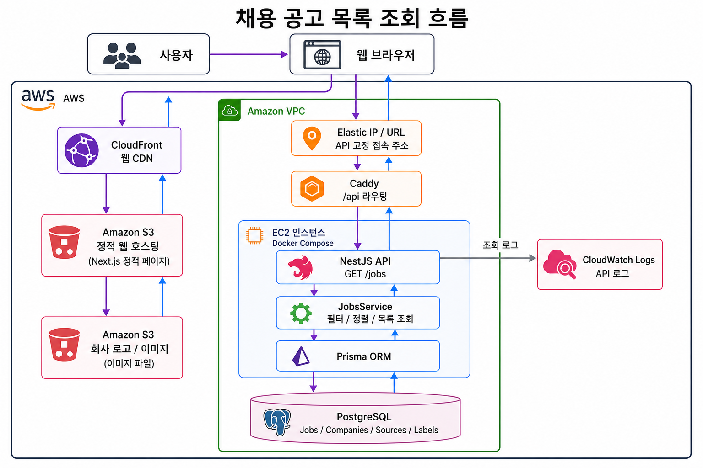

공고의 파편화
회사 채용 페이지, KICPA 게시판, 일반 채용 플랫폼에 공고가 분산되어 반복 탐색 비용이 큽니다.

지원자는 여러 채널을 오가며 공고 조건과 회사 정보를 직접 대조해야 하고, 기업은 지원자의 관심 흐름을 파악하기 어렵습니다.
회사 채용 페이지, KICPA 게시판, 일반 채용 플랫폼에 공고가 분산되어 반복 탐색 비용이 큽니다.
수습 가능 여부, 실무수습기관 인정 여부, KICPA 필수/우대 조건을 공고마다 따로 확인해야 합니다.
회사 규모, 평균 연봉, 입사와 퇴사 흐름 등 지원 결정에 필요한 정보가 채용 공고와 따로 존재합니다.
감사, 세무, FAS, Deal, 내부회계, 인하우스 등 다양한 회계 직무로 커리어를 확장하려는 사용자입니다.
공고를 등록하고 지원자 관심도와 공고 성과 데이터를 확인하려는 기업회원입니다.
수습 CPA 가능 공고, 실무수습기관 인정 여부, 신입 채용, KICPA 조건을 중심으로 탐색하는 사용자입니다.
실제 서비스 화면을 기준으로 공고 탐색, AI 적합도 분석, 기업회원 분석, 마감 관리와 커뮤니티 흐름을 정리했습니다.
직무, 회사 유형, 지역, 경력, KICPA 조건, 수습 가능 여부, 실무수습기관 여부, 마감 유형 등 CPA 채용에 필요한 조건으로 공고를 좁혀 봅니다.

이력서를 기반으로 공고별 적합도를 계산하고, 강점과 보완점, 핵심 태그와 유의사항을 함께 보여 주어 지원 판단 시간을 줄입니다.

공고 조회수, 원문 클릭수, 북마크 수, 클릭률, 전환 흐름을 확인해 어떤 조건에 지원자가 반응하는지 데이터로 파악합니다.

주간, 월간, 미니 캘린더에서 시작일과 마감일을 확인하고, 북마크 공고의 마감 임박과 상태 변경을 놓치지 않도록 관리합니다.

CPA 준비생, 수습 회계사, 시니어 회계사가 경험을 나누고, 기업 유형, 평균 연봉, 인원 추이, 진행 중 공고를 함께 비교합니다.

공개 방문자와 개인회원은 공고와 회사 페이지를 탐색하고, 기업회원은 공고 등록을 요청하며, 관리자는 검수 후 게시합니다.
공개 방문자와 회원이 CPA 채용 공고와 회사 정보를 탐색합니다.
기업회원은 채용 공고 게시 요청과 회사 프로필 수정을 제출합니다.
관리자는 AI 제안, 출처, 마지막 확인 시각을 검수하고 승인합니다.
사용자는 마감일, 조건, 관심 태그 기반으로 공고를 관리합니다.
CPA 채용 탐색 문제를 제품, 데이터, 웹 경험으로 풀어 가는 팀입니다.
GitHub Pages에서 프로젝트를 볼 때 필요한 아키텍처, 워크스페이스 구조, 실행 명령과 검증 명령을 한곳에 정리했습니다.
사용자는 CloudFront를 통해 S3에 배포된 Next.js 정적 페이지를 받아 보고, API 요청은 고정 접속 주소와 Caddy 라우팅을 거쳐 EC2의 NestJS 서버로 전달됩니다. NestJS는 JobsService와 Prisma ORM을 통해 PostgreSQL의 Jobs, Companies, Sources, Labels 데이터를 조회하고, API 로그는 CloudWatch Logs로 수집합니다. 회사 로고와 이미지 파일은 별도 S3 버킷에서 정적 자산으로 관리합니다.

npm install
cp .env.example .env
docker compose up -d
npm run prisma:migrate
npm run prisma:mock
npm run dev
# focused checks
npm run typecheck
npm run lint
npm run test